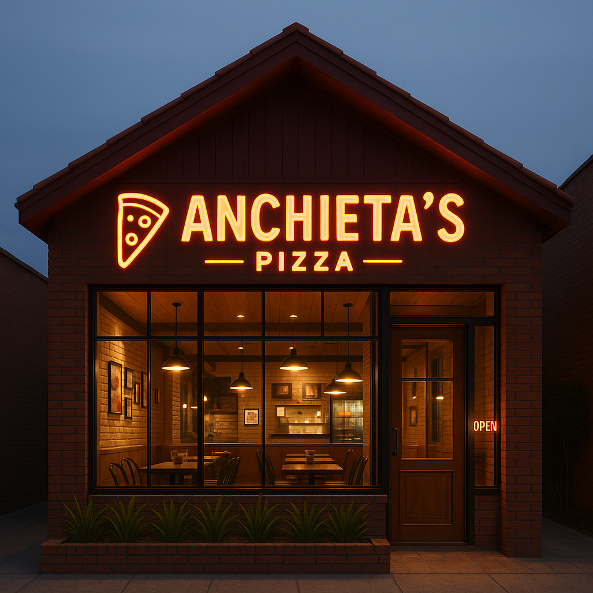
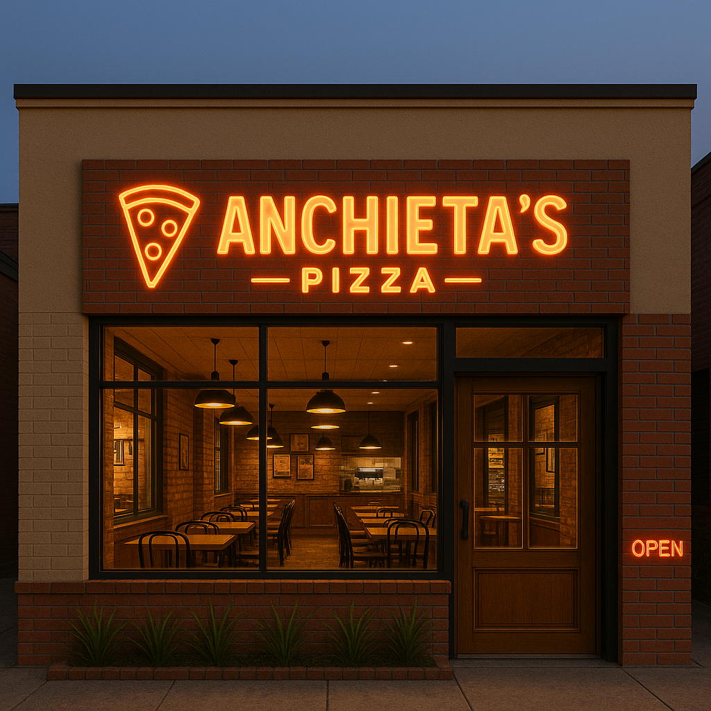

Seja bem-vindo(a) à nossa rede de pizzarias! Com o compromisso de levar sabor, qualidade e atendimento de excelência a cada cliente, nossa franquia tem crescido na cidade. Cada unidade é cuidadosamente planejada para oferecer uma experiência única, mantendo o mesmo padrão que faz da nossa pizza uma das favoritas da região.
Nesta página, você encontrará todas as nossas unidades, com informações detalhadas de localização e horário de funcionamento. Descubra qual está mais perto de você e venha saborear o melhor da nossa pizza artesanal feita com ingredientes selecionados e muito carinho!
Unidade Rua Amor Perfeito

A primeira unidade da Anchieta's Pizza está localizada na charmosa Rua Amor Perfeito, um local que simboliza o início de uma jornada de sucesso e sabor. Inaugurada com o objetivo de oferecer pizzas de qualidade e um ambiente acolhedor, nossa unidade na Rua Amor Perfeito foi o ponto de partida para o que se tornou uma verdadeira paixão entre nossos clientes.
Desde o começo, priorizamos ingredientes frescos e selecionados, garantindo um sabor inconfundível em cada fatia. A unidade foi projetada para proporcionar uma experiência única, com um ambiente confortável e descontraído, ideal para encontros com amigos, família ou para aquela refeição especial.
Com o apoio da nossa comunidade, a unidade da Rua Amor Perfeito continua a ser a base que inspira nossa constante busca pela perfeição, trazendo o melhor da tradição da pizza com toques inovadores. Venha conhecer o nosso primeiro endereço e fazer parte da história da Anchieta's Pizza.
Localização
Horário de Funcionamento
Segunda a Sexta: 11:00 - 23:00
Sábado e Domingo: 12:00 - 00:00
Unidade Avenida Jaime Torres

Com o sucesso da nossa primeira unidade, a Anchieta's Pizza deu mais um passo importante com a abertura da segunda unidade, agora na movimentada Avenida Jaime Torres. Esta expansão representa mais do que crescimento: é o reflexo do carinho dos nossos clientes e da vontade de levar nossa paixão por pizza a ainda mais pessoas.
Mantendo a mesma qualidade que conquistou o público no primeiro endereço, a unidade da Avenida Jaime Torres foi pensada para atender a um público diverso, em um espaço moderno, amplo e acolhedor. Seja para um almoço rápido, um jantar em família ou aquele delivery de confiança, aqui você encontra o mesmo padrão Anchieta's com um toque especial da nova casa.
A unidade da Jaime Torres reforça nosso compromisso com sabor, atendimento e ambiente, sempre buscando surpreender e encantar quem passa por aqui. Venha nos visitar e sinta-se em casa!
Localização
Horário de Funcionamento
Segunda a Sexta: 18:00 - 23:00
Sábado e Domingo: 18:00 - 00:00